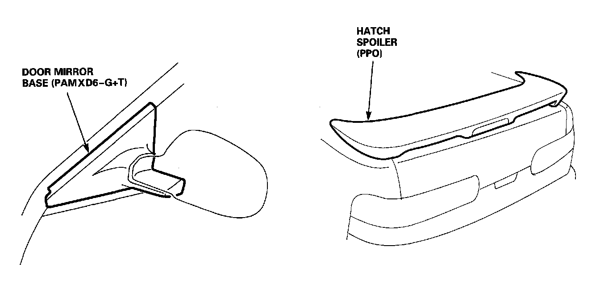

Operation CHARM
: Car repair manuals for everyone.
Home
>>
Acura
>>
1995
>>
Integra (RS, LS) L4-1834cc 1.8L DOHC PFI
>>
Repair and Diagnosis
>>
Body and Frame
>>
Paint, Striping and Decals
>>
Paint
>>
Description and Operation
>>
Resin Parts Paint Repair (Exterior)
>>
Nylon Resin Parts
Nylon Resin Parts
General

The nylon-resin parts can be repaired when it is lightly damaged or deformed. The repair procedure slightly differs from that of the PP, ABS resin and urethane resin parts.